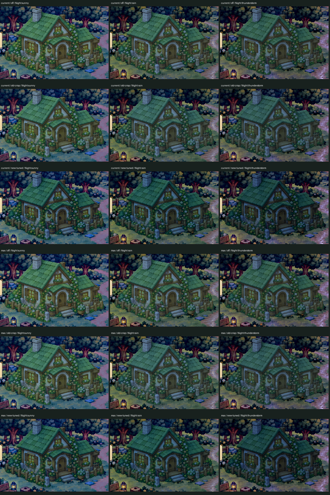
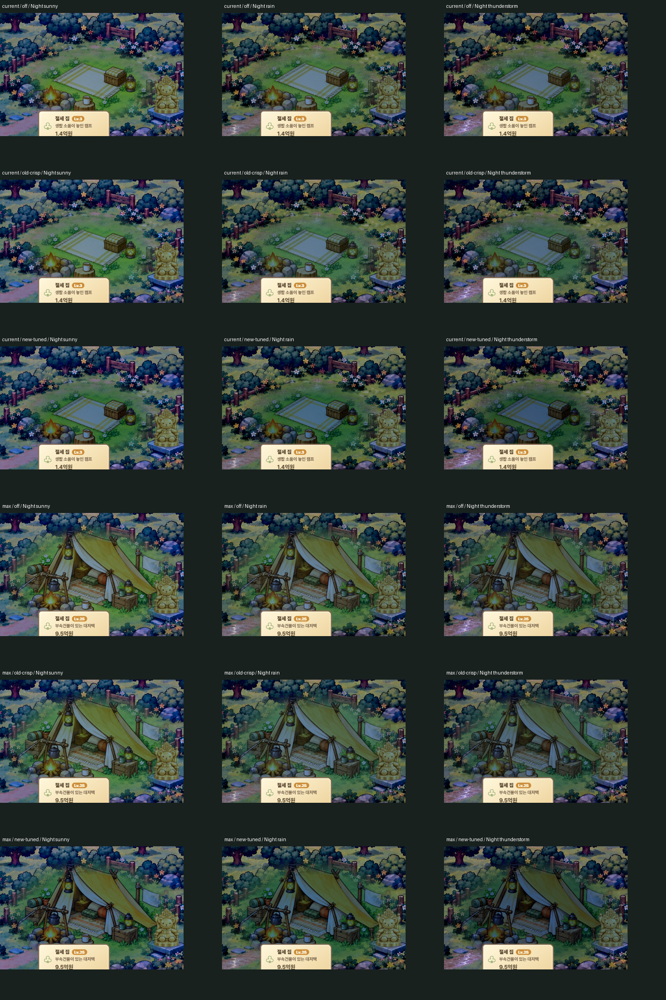
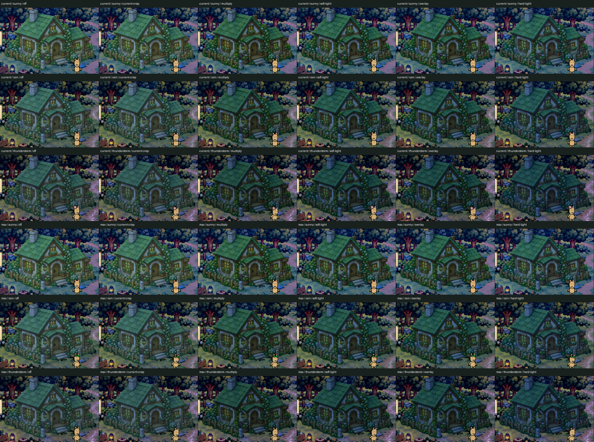
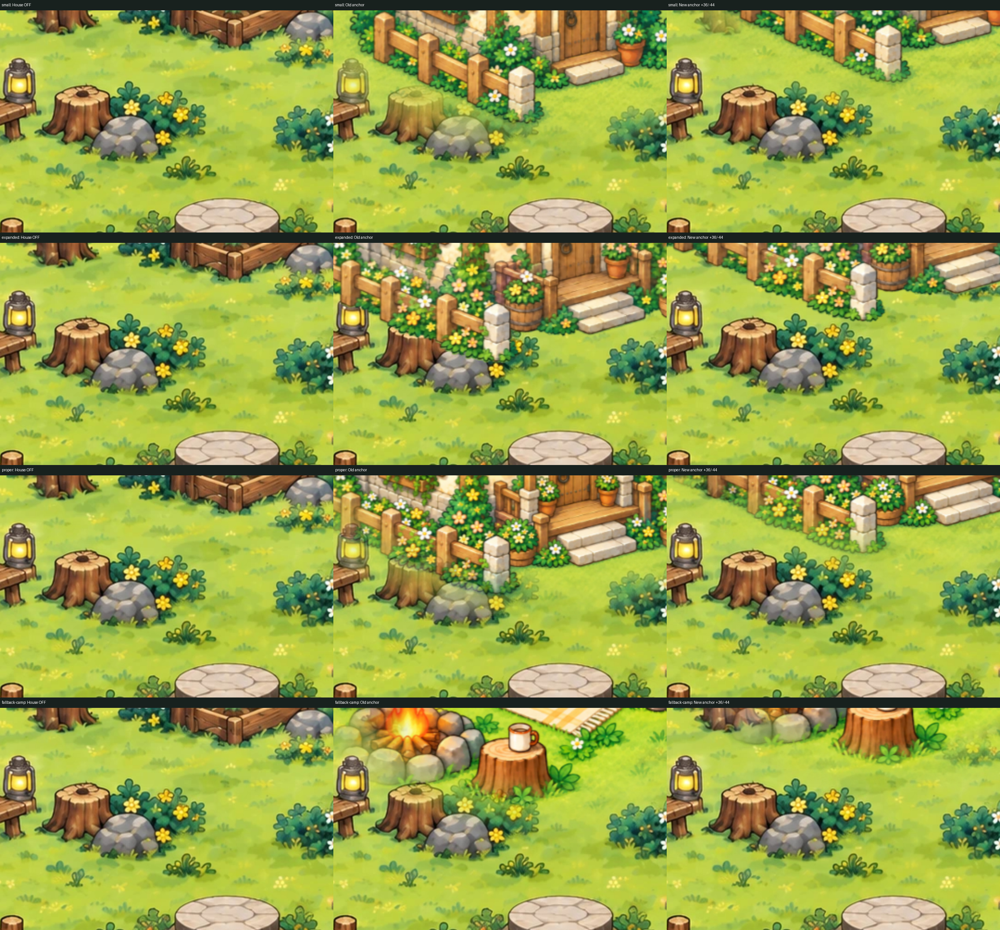
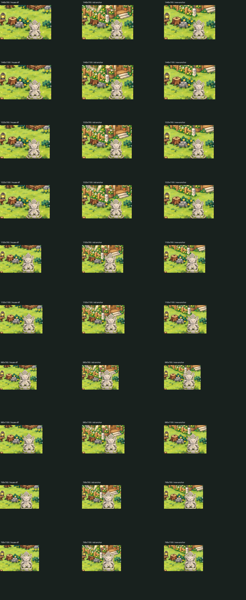
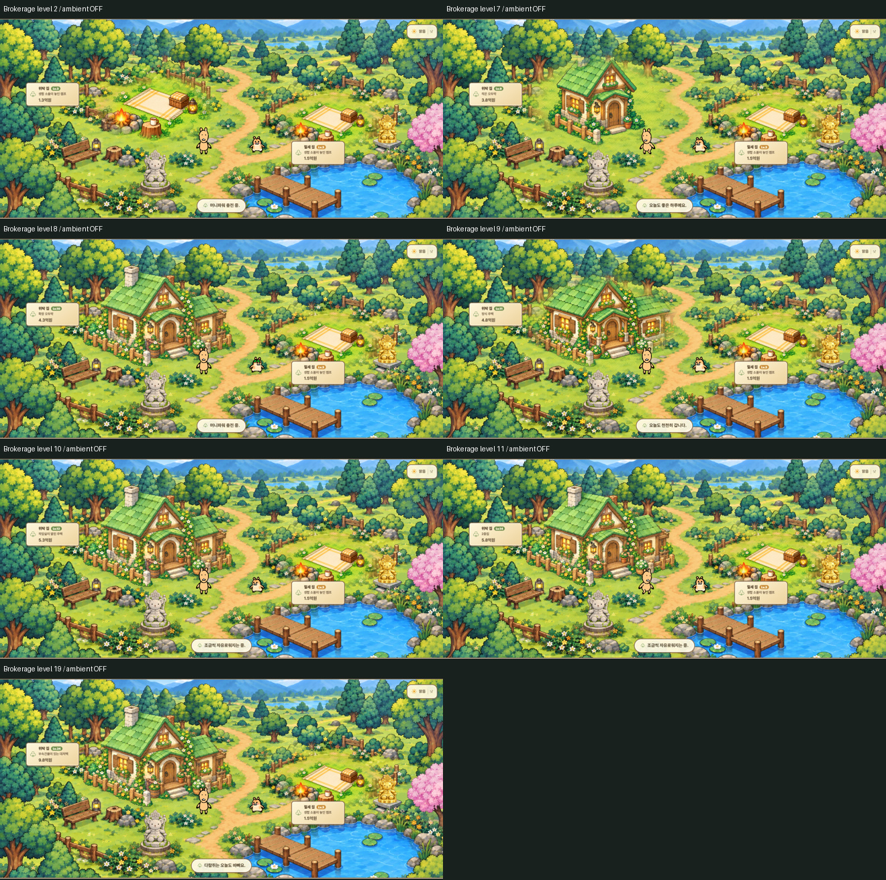

Night panels use the same new world anchor. Rows: ambient OFF / historical 6d0ff93 crisp / new tuned. Columns: Night Sunny / Rain / Storm. Current and max stage, followed by Tax. Click images to inspect original sheet resolution.






Final: multiply 18–22%, hard-light 15%, contrast 1.12; Night saturation .88/.84/.82/.80. SourceAlpha restored once. All 20 Brokerage stage mappings and 10 viewport ratios verified. Actual Android regression NOT RUN.